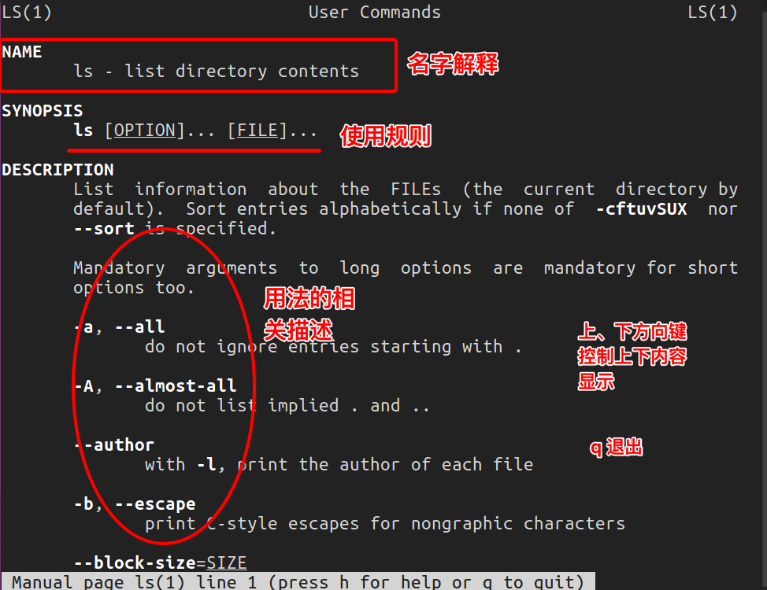

常用基本命令


- 很多人可能在电视或电影中看到过类似的场景，黑客面对一个黑色的屏幕，上面飘着密密麻麻的字符，梆梆一顿敲，就完成了窃取资料的任务。
- Linux 刚出世时没有什么图形界面，所有的操作全靠命令完成，就如同电视里的黑客那样，充满了神秘与晦涩。
- 近几年来，尽管 Linux 发展得非常迅速，图形界面越来越友好，但是在真正的开发过程中，Linux 命令行的应用还是占有非常重要的席位，而且许多Linux功能在命令行界面要比图形化界面下运行的快。可以说不会命令行，就不算会 Linux。
- Linux 提供了大量的命令，利用它可以有效地完成大量的工作，如磁盘操作、文件存取、目录操作、进程管理、文件权限设定等。Linux 发行版本最少的命令也有 200 多个，这里只介绍比较重要和使用频率最多的命令。
1.命令使用方法
Linux命令格式:
command [-options] [parameter1] …
说明：
- command: 命令名,相应功能的英文单词或单词的缩写
[-options]：选项,可用来对命令进行控制，也可以省略，
[]代表可选parameter1 …：传给命令的参数：可以是零个一个或多个
例：
2.查看帮助文档
<1>--help
一般是linux命令自带的帮助信息
如：ls --help
<2>man(有问题找男人，manual)
man是linux提供的一个手册，包含了绝大部分的命令、函数使用说明
该手册分成很多章节（section），使用man时可以指定不同的章节来浏览。
例：man ls ; man 2 printf
man中各个section意义如下：
- Standard commands（标准命令）
- System calls（系统调用，如open,write）
- Library functions（库函数，如printf,fopen）
- Special devices（设备文件的说明，/dev下各种设备）
- File formats（文件格式，如passwd）
- Games and toys（游戏和娱乐）
- Miscellaneous（杂项、惯例与协定等，例如Linux档案系统、网络协定、ASCII 码；environ全局变量）
- Administrative Commands（管理员命令，如ifconfig）
man是按照手册的章节号的顺序进行搜索的。
man设置了如下的功能键：
| 功能键 | 功能 |
|---|---|
| 空格键 | 显示手册页的下一屏 |
| Enter键 | 一次滚动手册页的一行 |
| b | 回滚一屏 |
| f | 前滚一屏 |
| q | 退出man命令 |
| h | 列出所有功能键 |
| /word | 搜索word字符串 |

注意：实际上，我们不用指定第几个章节也用查看，如，man ls
3.自动补全：
在敲出命令的前几个字母的同时，按下tab键，系统会自动帮我们补全命令
4.历史命令：
当系统执行过一些命令后，可按上下键翻看以前的命令，history将执行过的命令列举出来